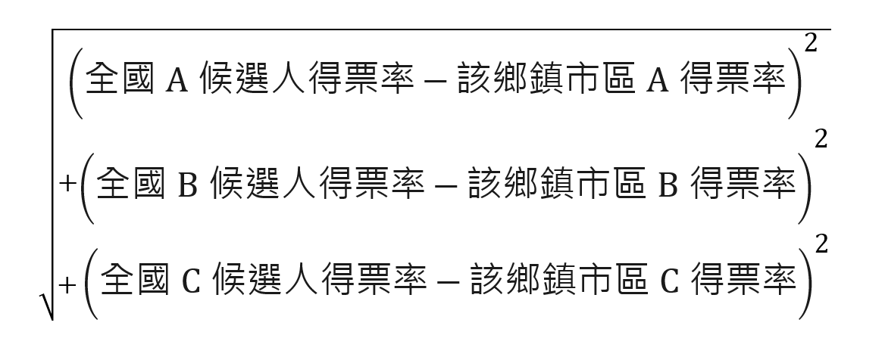

測測看！你住的地方，是總統大選章魚哥嗎？
看看你的家鄉投票結果和全國選民的接近程度，在全台368個鄉鎮市區中，究竟排名第幾？
2008
???
名
2012
???
名
2016
???
名
2008/2012
「章魚哥」的計算方式，是根據中選會2008年、2012年總統大選開票資料，計算全台368個鄉鎮市區中，哪些地區的開票結果，和全台開票結果的「差異距離」最小、吻合度最高。
「差異距離」的公式是：
假如該年度有三位總統候選人A、B、C，取平方和開根號
換句話說，不管該地區開出來的結果是藍勝還是綠勝，只要各組候選人得票比例，和全國的各組候選人得票比例很接近，就可以算得上是「章魚哥」，代表的是，該區居民與全國「民意風向」接近。假如得票比例「差異距離」很大，代表該區民意與整體風向不同，可能是俗稱的「鐵票區」。
例如：2008年總統大選，藍營候選人馬英九、蕭萬長的得票率是58.44%，綠營候選人謝長廷、蘇貞昌的得票率是41.55%。
若某「章魚市章魚鄉」的總統開票結果，藍營也是58.44%、綠營也是41.55%，那麼該「章魚市章魚鄉」的預測準確度就是百分百，和全台開票結果的「差異距離」等於 0。
★預告強打
很遺憾，你住的地方不是章魚哥嗎？
那揪～竟哪些地方才是正港選戰章魚哥？他們有什麼共通點，可以如此神準？2016大選開票結果，會讓哪些「原章魚哥」凸槌失準，又有哪些成為新秀章魚哥？
1/17 即將推出「選戰章魚哥-2016版」將公布：
● 超準章魚哥vs不準反指標 市鎮排行榜 TOP 10
除此之外，將根據三屆總統選舉數據，還會深入解析：
● 這隻章魚哥 到底有什麼特別？
●「章魚群」會遷徙？甘有什麼道理？
請各位觀眾投完票之後，記得準時收看！
聯合報新媒體中心／陳皓嬿、李怡欣、楊棋宇、鄭偉廷、蘇士堯 製作
插畫 ／董十行
資料來源／中選會